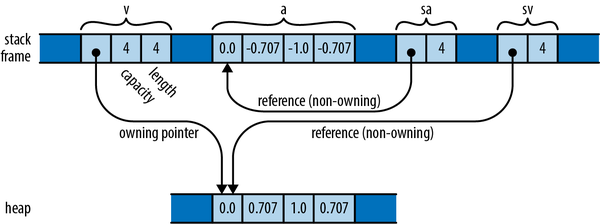

Chapter 3. Fundamental Types
The first principles of the universe are atoms and empty space; everything else is merely thought to exist.
Diogenes Laertes (describing the philosophy of Democritus)
This chapter covers Rust’s fundamental types for representing values: integer and floating-point numbers, strings and characters, vectors and arrays, and so on. These source-level types have concrete machine-level counterparts with predictable costs and performance.
Compared to a dynamically typed language like JavaScript or Python, Rust requires more planning from you up front. You must spell out the types of function arguments and return values, struct fields, and a few other constructs. For the rest, Rust’s type inference will generally figure out the types for you. For example, you could spell out every type in a function, like this:
fngrade_cutoffs(tier_size:u32)->Vec<u32>{letmutcutoffs:Vec<u32>=Vec::<u32>::new();fortierin1u32..5u32{cutoffs.push(100u32-tier*tier_size);}cutoffs}
But this is cluttered and repetitive. Given the function’s return type, it’s obvious that cutoffs must be a Vec<u32>, a vector of 32-bit signed integers; no other type would work. And from that it follows that each element of the vector must be a u32, and therefore all the numbers being multiplied and subtracted must be u32 as well. This is exactly the sort of reasoning Rust’s type inference applies, allowing you to instead write:
fngrade_cutoffs(tier_size:u32)->Vec<u32>{letmutcutoffs=Vec::new();fortierin1..5{cutoffs.push(100-tier*tier_size);}cutoffs}
These two definitions are exactly equivalent, and Rust will generate the same machine code either way. Type inference gives back much of the legibility of dynamically typed languages, while still catching type errors at compile time.
The rest of this chapter covers Rust’s types from the bottom up. Table 3-1 offers a sample of the sorts of types you’ll see in Rust. It shows Rust’s primitive types, some very common types from the standard library, and some examples of user-defined types.
| Type | Description | Values |
|---|---|---|
i8, i16, i32, i64, i128u8, u16, u32, u64, u128 |
Signed and unsigned integers, of given bit width |
42, -5i8, 0x400u16, 0o100i16, 20_922_789_888_000u64,b'*' (u8 byte literal) |
isize, usize |
Signed and unsigned integers, the same size as an address on the machine (usually 64 bits) |
137,-0b0101_0010_isize,0xffff_fc00_usize |
f32, f64 |
IEEE floating-point numbers, single and double precision |
1.0, 3.14159f32, 6.0221e23 |
bool |
Boolean | true, false |
(char, u8, i32) |
Tuple: mixed types allowed | ('%', 0x7f, -1) |
() |
“Unit” (empty tuple) | () |
struct S { |
Named-field struct | S { x: 120.0, y: 209.0 } |
struct T(i32, char); |
Tuple struct | T(120, 'X') |
struct E; |
Unit-like struct; has no fields | E |
enum Attend { |
Enumeration, algebraic data type | Attend::Late(5), Attend::OnTime |
Box<Attend> |
Box: owning pointer to value in heap | Box::new(Late(15)) |
&i32, &mut i32 |
Shared and mutable references: non-owning pointers that must not outlive their referent | &s.y, &mut v |
String |
UTF-8 string, dynamically sized | "ラーメン: ramen".to_string() |
&str |
Reference to str: non-owning pointer to UTF-8 text |
"そば: soba", &s[0..12] |
char |
Unicode character, 32 bits wide | '*', '\n', '字', '\x7f', '\u{CA0}' |
[f64; 4], [u8; 256] |
Array, fixed length; elements all of same type | [1.0, 0.0, 0.0, 1.0],[b' '; 256] |
Vec<f64> |
Vector, varying length; elements all of same type | vec![0.367, 2.718, 7.389] |
&[u8], &mut [u8] |
Reference to slice: reference to a portion of an array or vector, comprising pointer and length | &v[10..20], &mut a[..] |
Option<&str> |
Optional value: either None (absent) or Some(v) (present, with value v) |
Some("Dr."), None |
Result<u64, Error> |
Result of operation that may fail: either a success value Ok(v), or an error Err(e) |
Ok(4096), Err(Error::last_os_error()) |
&dyn Error, &mut dyn Read |
Reference to trait object: any value that implements a given set of methods | &err as &dyn Error,&mut file as &mut dyn Read |
fn(&str) -> bool |
Function pointer | str::is_empty |
| (Closure types have no written form) | Closure | |a, b| { a*a + b*b } |
Most of these types are covered in this chapter, except for the following:
-
We give
structtypes their own chapter, Chapter 9. -
We give enumerated types their own chapter, Chapter 10.
-
We describe trait objects in Chapter 11.
-
We describe the essentials of
Stringand&strhere, but provide more detail in Chapter 17. -
We cover function and closure types in Chapter 14.
Numeric Types
The foundation of Rust’s type system is a collection of fixed-width numeric types, chosen to match the types that almost all modern processors implement directly in hardware.
Fixed-width numeric types can overflow or lose precision, but they are adequate for most applications and can be thousands of times faster than representations like arbitrary-precision integers and exact rationals. If you need those sorts of numeric representations, they are available in the num crate.
The names of Rust’s numeric types follow a regular pattern, spelling out their width in bits, and the representation they use (Table 3-2).
| Size (bits) | Unsigned integer | Signed integer | Floating-point |
|---|---|---|---|
| 8 | u8 |
i8 |
|
| 16 | u16 |
i16 |
|
| 32 | u32 |
i32 |
f32 |
| 64 | u64 |
i64 |
f64 |
| 128 | u128 |
i128 |
|
| Machine word | usize |
isize |
Here, a machine word is a value the size of an address on the machine the code runs on, 32 or 64 bits.
Integer Types
Rust’s unsigned integer types use their full range to represent positive values and zero (Table 3-3).
| Type | Range |
|---|---|
u8 |
0 to 28−1 (0 to 255) |
u16 |
0 to 216−1 (0 to 65,535) |
u32 |
0 to 232−1 (0 to 4,294,967,295) |
u64 |
0 to 264−1 (0 to 18,446,744,073,709,551,615, or 18 quintillion) |
u128 |
0 to 2128−1 (0 to around 3.4×1038) |
usize |
0 to either 232−1 or 264−1 |
Rust’s signed integer types use the two’s complement representation, using the same bit patterns as the corresponding unsigned type to cover a range of positive and negative values (Table 3-4).
| Type | Range |
|---|---|
i8 |
−27 to 27−1 (−128 to 127) |
i16 |
−215 to 215−1 (−32,768 to 32,767) |
i32 |
−231 to 231−1 (−2,147,483,648 to 2,147,483,647) |
i64 |
−263 to 263−1 (−9,223,372,036,854,775,808 to 9,223,372,036,854,775,807) |
i128 |
−2127 to 2127−1 (roughly -1.7×1038 to +1.7×1038) |
isize |
Either −231 to 231−1, or −263 to 263−1 |
Rust uses the u8 type for byte values. For example, reading data from a binary file or socket yields a stream of u8 values.
C/C++ programmers should note that there is no single “character” type used for both text and binary data in Rust. As we’ll see when we discuss strings and characters later in this chapter, Rust’s char type is a Unicode character type, not an integer type, and is quite different from C’s char.
The usize and isize types are analogous to size_t and ptrdiff_t in C and C++. Their precision matches the size of the address space on the target machine: they are 32 bits long on 32-bit architectures, and 64 bits long on 64-bit architectures. Rust requires array indices to be usize values. Values representing the sizes of arrays or vectors or counts of the number of elements in some data structure also generally have the usize type.
Integer literals in Rust can take a suffix indicating their type: 42u8 is a u8 value, and 1729isize is an isize. If an integer literal lacks a type suffix, Rust puts off determining its type until it finds the value being used in a way that pins it down: stored in a variable of a particular type, passed to a function that expects a particular type, compared with another value of a particular type, or something like that. If the code provides no such clues, Rust defaults to i32.
The prefixes 0x, 0o, and 0b designate hexadecimal, octal, and binary literals.
To make long numbers more legible, you can insert underscores among the digits. For example, you can write the largest u32 value as 4_294_967_295. The exact placement of the underscores is not significant, so you can break hexadecimal or binary numbers into groups of four digits rather than three, as in 0xffff_ffff, or set off the type suffix from the digits, as in 127_u8.
You can convert from one integer type to another using the as operator:
assert_eq!(10_i8asu16,10_u16);assert_eq!(0xcafedad_u64asu8,0xad_u8);// value too big for u8, truncated
The standard library provides some operations as methods on integers. For example:
assert_eq!(2_u16.pow(4),16);// exponentiationassert_eq!((-4_i32).abs(),4);// absolute valueassert_eq!(0b101101_u8.count_ones(),4);// population countassert_eq!(12_i32.max(37),37);// maximum of two values
There are dozens of these. You can find them in the online documentation under “Primitive Type i32” and friends.
In real code, you usually won’t need to write out the type suffixes as we’ve done here, because the context will determine the type. When it doesn’t, however, the error messages can be surprising. For example, the following doesn’t compile:
println!("{}",(-4).abs());
Rust complains:
error: can't call method `abs` on ambiguous numeric type `{integer}`
In cases like this where the type of an integer is unclear, Rust usually defaults to i32. In the particular case where we’re calling a method, though, it’s an error. Rust always needs to know the type of a value before looking up its methods. The solution is to spell out which type you intend, either with a suffix or by using a specific type’s function:
println!("{}",(-4_i32).abs());println!("{}",i32::abs(-4));
Note that method calls have a higher precedence than unary prefix operators, so be careful when applying methods to negated values. Without the parentheses around -4_i32 in the first statement, -4_i32.abs() would apply the abs method to the positive value 4, producing positive 4, and then negate that, producing -4.
Handling Integer Overflow
Integer arithmetic can overflow, producing results that are outside the range of Rust’s integer types.
For example, the following function has a surprising bug:
fnmidpoint(lo:i32,hi:i32)->i32{(lo+hi)/2}// panic: attempt to add with overflow (in debug builds only!)letm=midpoint(7,i32::MAX);
The midpoint function looks about right, but when called with large enough arguments, (lo + hi) produces a result that is outside of i32’s range. In Java, that would “wrap around” to a negative number instead. The function would then divide that by two and return an incorrect result. In C or C++, integer overflow is undefined behavior.
In Rust, debug builds check the addition and panic on overflow, giving you a chance to notice and fix the problem. (In this case, you could cast the arguments to i64, do the math, and cast the result back to i32; or just use the built-in method lo.midpoint(hi).) In release builds, for speed, the checks are disabled by default, and integer arithmetic wraps around, as in Java.
This conditional behavior isn’t always ideal, so the integer types provide methods that let you spell out exactly what you want. These integer arithmetic methods fall in five general categories:
-
Wrapping operations return the value equivalent to the mathematically correct result modulo the range of the value:
// The first product can be represented as a u16;// the second cannot, so we get 250000 modulo 2¹⁶.assert_eq!(100_u16.wrapping_mul(200),20000);assert_eq!(500_u16.wrapping_mul(500),53392);// Operations on signed types may wrap to negative values.assert_eq!(500_i16.wrapping_mul(500),-12144);This is exactly how the
*operator behaves in release builds. The advantage of thewrappingmethods is that they behave the same way in all builds. -
Strict operations provide the debug-mode behavior in all builds: panic on overflow.
letx=usize::MAX.strict_mul(2);// panic (in all builds) -
Checked operations return an
Optionof the result:Some(v)if the mathematically correct result can be represented as a value of that type, orNoneif it cannot. For example:// The sum 10 + 20 fits in a u8, but 100 + 200 doesn't.assert_eq!(10_u8.checked_add(20),Some(30));assert_eq!(100_u8.checked_add(200),None);// Oddly, signed division can overflow too, in one particular case.// A signed n-bit type can represent -2ⁿ⁻¹, but not 2ⁿ⁻¹.assert_eq!((-128_i8).checked_div(-1),None); -
Saturating operations return the representable value that is closest to the mathematically correct result. In other words, the result is “clamped” to the maximum and minimum values the type can represent:
assert_eq!(32760_i16.saturating_add(10),32767);assert_eq!((-32760_i16).saturating_sub(10),-32768); -
Overflowing operations return a tuple
(result, overflowed), whereresultis what the wrapping version of the function would return, andoverflowedis aboolindicating whether an overflow occurred:assert_eq!(255_u8.overflowing_sub(2),(253,false));assert_eq!(255_u8.overflowing_add(2),(1,true));
The bit-shifting operations shl (shift left, <<) and shr (shift right, >>) deviate from the pattern. For these operations it is the shift distance, not the result, that can be out of range (again causing undefined behavior in C++). So the “checking”, “wrapping”, or “overflowing” for these methods applies to the shift distance argument.
assert_eq!(10_u64.wrapping_shl(65),20);assert_eq!(10_u64.checked_shr(65),None);
Floating-Point Types
Rust provides the usual single- and double-precision floating-point types (Table 3-5). Rust’s f32 and f64 correspond to the float and double types in C/C++ and Java, or float32 and float64 in Go. Both types follow the IEEE 754 floating point standard. They include positive and negative infinities, distinct positive and negative zero values, and a not-a-number value.
| Type | Precision | Range |
|---|---|---|
f32 |
IEEE single precision (at least 6 decimal digits) | Roughly ±3.4 × 1038 |
f64 |
IEEE double precision (at least 15 decimal digits) | Roughly ±1.8 × 10308 |
Floating-point literals have the general form diagrammed in Figure 3-1.

Figure 3-1. A floating-point literal
Every part of a floating-point number after the integer part is optional, but at least one of the fractional part, exponent, or type suffix must be present, to distinguish it from an integer literal. Rust never assigns a floating-point type to a integer literal, or vice versa.
The fractional part may consist of a lone decimal point, so 5. is a valid floating-point constant.
If a floating-point literal lacks a type suffix, Rust checks the context to see how the value is used, much as it does for integer literals. The default is f64.
The types f32 and f64 have associated constants for the IEEE-required special values like INFINITY, NEG_INFINITY (negative infinity), NAN (the not-a-number value), and MIN and MAX (the largest and smallest finite values):
assert!((-1./f32::INFINITY).is_sign_negative());assert_eq!(-f32::MIN,f32::MAX);
The f32 and f64 types provide a full complement of methods for mathematical calculations; for example, 2f64.sqrt() is the double-precision square root of two. Some examples:
assert_eq!(5f32.sqrt()*5f32.sqrt(),5.);// exactly 5.0, per IEEEassert_eq!((-1.01f64).floor(),-2.0);
These methods are documented under “Primitive Type f32” and “Primitive Type f64”. The separate modules std::f32::consts and std::f64::consts provide various commonly used mathematical constants like E, PI, and the square root of two.
As with integers, you usually won’t need to write out type suffixes on floating-point literals in real code, but when you do, putting a type on either the literal or the function will suffice:
println!("{}",(2.0_f64).sqrt());println!("{}",f64::sqrt(2.0));
Unlike C and C++, Rust does not perform numeric conversions implicitly. If a function expects an f64 argument, it’s an error to pass an i32 value as the argument. In fact, Rust won’t even implicitly convert an i16 value to an i32 value, even though every i16 value is in the range of i32. But you can always write out explicit conversions using the as operator: i as f64, or x as i32.
The lack of implicit conversions sometimes makes a Rust expression more verbose than the analogous C or C++ code would be. However, implicit integer conversions have a well-established record of causing bugs and security holes, especially when the integers in question represent the size of something in memory, and an unanticipated overflow occurs. In our experience, the act of writing out numeric conversions in Rust has alerted us to problems we would otherwise have missed.
We explain exactly how conversions behave in “Type Casts”.
The bool Type
Rust’s Boolean type, bool, has the usual two values for such types, true and false. Comparison operators like == and < produce bool results: the value of 2 < 5 is true.
Many languages are lenient about using values of other types in contexts that require a Boolean value: C and C++ implicitly convert characters, integers, floating-point numbers, and pointers to Boolean values, so they can be used directly as the condition in an if or while statement. Python and JavaScript permit any value at all in an if condition, with language-specific rules to determine which values are treated as true there and which are false. Rust, however, is very strict: control structures like if and while require their conditions to be bool expressions, as do the short-circuiting logical operators && and ||. You must write if x != 0 { ... }, not simply if x { ... }.
Rust’s as operator can convert bool values to integer types:
assert_eq!(falseasi32,0);assert_eq!(trueasi32,1);
However, as won’t convert in the other direction, from numeric types to bool. Instead, you must write out an explicit comparison like x != 0.
Although a bool needs only a single bit to represent it, Rust uses an entire byte for a bool value in memory, so you can create a pointer to it.
Tuples
A tuple is a pair, or triple, quadruple, quintuple, etc. (hence, n-tuple, or tuple), of values of assorted types. You can write a tuple as a sequence of values, separated by commas and surrounded by parentheses. For example, (1984_i32, false) is a tuple whose first field is an integer, and whose second is a boolean; its type is (i32, bool). Given a tuple value t, you can access its fields as t.0, t.1, and so on.
Tuples are very different from arrays. For one thing, each field of a tuple can have a different type, whereas an array’s elements must all be the same type. Further, while accessing elements by a variable index, arr[i], is practically the defining feature of arrays, there is no way to do this with a tuple. You can access a field by its numeric “name”, t.1, but you can’t write t.i or t[i] to get the ith field.
Rust code often uses tuple types to return multiple values from a function. For example, the split_at method on string slices, which divides a string into two halves and returns them both, is declared like this:
fnsplit_at(&self,mid:usize)->(&str,&str);
The return type (&str, &str) is a tuple of two string slices. You can use pattern-matching syntax to assign each field of the return value to a different variable:
lettext="I see the eigenvalue in thine eye";let(head,tail)=text.split_at(21);assert_eq!(head,"I see the eigenvalue ");assert_eq!(tail,"in thine eye");
This is more legible than the equivalent:
lettext="I see the eigenvalue in thine eye";lettemp=text.split_at(21);lethead=temp.0;lettail=temp.1;assert_eq!(head,"I see the eigenvalue ");assert_eq!(tail,"in thine eye");
You’ll also see tuples used as a sort of minimal-drama struct type. For example, in the Mandelbrot program in Chapter 2, we needed to pass the width and height of the image to the functions that plot it and write it to disk. We could declare a struct with width and height members, but that’s pretty heavy notation for something so obvious, so we just used a tuple:
/// Writes the buffer `pixels`, whose dimensions are given by `bounds`, to the/// file named `filename`.fnwrite_image(filename:&str,pixels:&[u8],bounds:(usize,usize),)->Result<(),std::io::Error>{...}
The type of the bounds parameter is (usize, usize), a tuple of two usize values. Admittedly, we could just as well write out separate width and height parameters, and the machine code would be about the same either way. It’s a matter of clarity. We think of the size as one value, not two, and using a tuple lets us write what we mean.
The other commonly used tuple type is the zero-tuple (). This is traditionally called the unit type because it has only one value, also written (). Rust uses the unit type where there’s no meaningful value to carry, but context requires some sort of type nonetheless.
For example, a function that returns no value has a return type of (). The standard library’s std::thread::sleep function has no meaningful value to return; it just pauses the program for a while. The declaration for std::thread::sleep reads:
fnsleep(duration:Duration);
The signature omits the function’s return type altogether, which is shorthand for returning the unit type:
fnsleep(duration:Duration)->();
Similarly, the write_image example we mentioned before has a return type of Result<(), std::io::Error>, meaning that the function returns a std::io::Error value if something goes wrong, but returns no value on success.
Pointer Types
Rust has several types that represent memory addresses.
This is unusual in modern programming languages for two reasons. First, in many languages, values do not nest. In Java, for example, if class Rectangle contains a field Vector2D upperLeft;, then upperLeft is a reference to another separately created Vector2D object. Objects never physically contain other objects in Java. The language doesn’t need pointer types because every Java object type is implicitly a pointer type.
Rust is different. The language is designed to help keep allocations to a minimum, so values nest by default. The value ((0, 0), (1440, 900)) is stored as four adjacent integers. If you store it in a local variable, you’ve got a local variable four integers wide. Nothing is allocated in the heap. This is great for memory efficiency, but as a consequence, whenever a Rust program needs one value to point to another, it must say so by using a pointer type explicitly.
The second reason Rust needs several pointer types is that there’s no garbage collector to manage memory for us. It turns out memory still needs to be managed. Rust programs must decide when to allocate memory, how much to allocate, and when it’s safe to deallocate it. In Rust, these memory management policies are written out in the pointer types themselves. Here are some Rust pointer types and the policies they represent. Don’t worry if this is a bit bewildering at first; we explain all of these types fully in later chapters.
&Tand&mut T- We showed a few examples of references already in Chapter 2. References refer to “borrowed” values without taking on any responsibility for cleanup. Therefore references have no memory management overhead at all.Box<T>- This is a pointer type that points to a value of typeTstored in the heap. Memory is allocated when the program callsBox::new(value). When the box is “dropped”—for example, when the variable holding the box goes out of scope—the memory is freed. Boxes are not needed every day, but they’re the most basic way to override the default nesting of values, which is occasionally useful.std::rc::Rc<T>andstd::sync::Arc<T>- These are Rust’s support for reference counting. UnlikeBox<T>pointers, multipleRc<T>pointers can point to the same heap-allocatedT. This is useful when, say, multiple parts of a program all need access to a shared component. Rust tracks how manyRcs point to each shared value. The memory for theTis freed when the lastRcpointing to it is dropped.Arc<T>is the same, but it uses an atomic reference count, soArcs can be shared across multiple threads.*const Tand*mut T- These are Rust’s raw pointer types, the equivalent of C pointers. They can be dereferenced only inunsafeblocks, code that explicitly opts out of Rust’s safety guarantees. Raw pointers can be necessary when calling into a C library, or behind the scenes when implementing a new kind of data structure from scratch. We won’t discuss them again until Chapter 23.
All of these types point to a value of type T; they differ only in memory management strategies and corresponding rules about mutability and thread safety.
Java doesn’t need all this variety: the garbage collector provides a convenient, one-size-fits-all strategy for managing memory. C++ programmers, however, will recognize these as smart pointer types, similar to those in the C++ standard library: Box<T> is like C++’s std::unique_ptr<T>, and Arc<T> is like C++’s std::shared_ptr<T>.
Except for raw pointers, Rust pointer types are non-nullable. Use Option for optional pointers, with None representing null. There’s no extra memory cost; an Option<&T> is the same size as a &T.
Arrays, Vectors, and Slices
Rust has three types for representing a sequence of values in memory:
-
The type
[T; N]represents a fixed-size array ofNvalues, each of typeT. An array’s size is a constant determined at compile time and is part of the type; you can’t grow or shrink an array. -
The type
Vec<T>, called a vector ofTs, is a dynamically allocated, growable sequence of values of typeT. A vector’s elements live in the heap, so you can resize vectors at will: push new elements onto them, append other vectors to them, delete elements, and so on. -
The types
&[T]and&mut [T]are reference types that refer to a slice, a contiguous subsequence, of a vector or array’s elements.
Given a value v of any of these three types, the expression v.len() gives the number of elements in v, and v[i] refers to the ith element of v. The first element is v[0], and the last element is v[v.len() - 1]. Rust checks that i always falls within this range; if it doesn’t, the expression panics. The length of v may be zero, in which case any attempt to index it will panic. i must be a usize value; you can’t use any other integer type as an index.
Arrays
There are several ways to write array values. The simplest is to write a series of values within square brackets:
letlazy_caterer:[u32;6]=[1,2,4,7,11,16];lettaxonomy=["Animalia","Arthropoda","Insecta"];assert_eq!(lazy_caterer[3],7);assert_eq!(taxonomy.len(),3);
For the common case of a long array filled with some value, you can write [V; N], where V is the value each element should have, and N is the length. For example, [true; 10000] is an array of 10,000 bool elements, all set to true:
letmutsieve=[true;10000];foriin2..100{ifsieve[i]{letmutj=i*i;whilej<10000{sieve[j]=false;j+=i;}}}assert!(sieve[211]);assert!(!sieve[9876]);
You’ll see this syntax used for fixed-size buffers: [0u8; 1024] is a one-kilobyte buffer, filled with zeros. Rust has no notation for an uninitialized array. (In general, Rust ensures that code can never access uninitialized memory.)
An array’s length is part of its type, fixed at compile time. If n is a variable, you can’t write [true; n] to get an array of n elements. You might think, in light of this severe limitation, that arrays don’t sound very useful. For most use cases, you’d be right! Arrays are efficient: small arrays can be stored on the stack or inside a struct without allocating more heap memory. An array of 8 bytes can fit in a single machine register! But in day-to-day programming, most lists have a variable length. For that, you need a vector.
Vectors
A vector Vec<T> is a resizable array of elements of type T, allocated in the heap.
There are several ways to create vectors. The simplest is to use the vec! macro, which gives us a syntax for vectors that looks very much like an array literal:
letmutprimes=vec![2,3,5,7];assert_eq!(primes.iter().product::<i32>(),210);
But of course, this is a vector, not an array, so we can add elements to it dynamically:
primes.push(11);primes.push(13);assert_eq!(primes.iter().product::<i32>(),30030);
You can also build a vector by repeating a given value a certain number of times, again using a syntax that imitates array literals:
fnnew_pixel_buffer(rows:usize,cols:usize)->Vec<u8>{vec![0;rows*cols]}
The vec! macro is equivalent to calling Vec::new to create a new, empty vector and then pushing the elements onto it:
letmutpal=Vec::new();pal.push("step");pal.push("on");pal.push("no");pal.push("pets");assert_eq!(pal,vec!["step","on","no","pets"]);
Another possibility is to build a vector from the values produced by an iterator:
letv:Vec<i32>=(0..5).collect();assert_eq!(v,[0,1,2,3,4]);
You’ll often need to supply the type when using collect (as we’ve done here), because it can build many different sorts of collections, not just vectors. By specifying the type of v, we’ve made it unambiguous which sort of collection we want.
Vec is an essential type in Rust—it’s used almost anywhere one needs a list of dynamic size—so there are many other methods that construct new vectors or extend existing ones. We’ll cover them in Chapter 16.
A Vec<T> consists of three values: a pointer to the heap-allocated buffer for the elements, which is created and owned by the Vec<T>; the number of elements that buffer has the capacity to store; and the number it actually contains now (in other words, its length). When the buffer has reached its capacity, adding another element to the vector entails allocating a larger buffer, copying the present contents into it, updating the vector’s pointer and capacity to describe the new buffer, and finally freeing the old one.
If you know the number of elements a vector will need in advance, instead of Vec::new you can call Vec::with_capacity to create a vector with a buffer large enough to hold them all, right from the start; then, you can add the elements to the vector one at a time without causing any reallocation. The vec! macro uses a trick like this, since it knows how many elements the final vector will have. Note that this only establishes the vector’s initial size; if you exceed your estimate, the vector simply enlarges its storage as usual.
Many library functions look for the opportunity to use Vec::with_capacity instead of Vec::new. For example, in the collect example, the iterator 0..5 knows in advance that it will yield five values, and the collect function takes advantage of this to pre-allocate the vector it returns with the correct capacity. We’ll see how this works in Chapter 15.
Just as a vector’s len method returns the number of elements it contains now, its capacity method returns the number of elements it could hold without reallocation:
letmutv=Vec::with_capacity(2);assert_eq!(v.len(),0);assert_eq!(v.capacity(),2);v.push(1);v.push(2);assert_eq!(v.len(),2);assert_eq!(v.capacity(),2);v.push(3);assert_eq!(v.len(),3);// Typically prints "capacity is now 4":println!("capacity is now {}",v.capacity());
The capacity printed at the end isn’t guaranteed to be exactly 4, but it will be at least 3, since the vector is holding three values.
You can insert and remove elements wherever you like in a vector, although these operations shift all the elements after the affected position forward or backward, so they may be slow if the vector is long:
letmutv=vec![10,20,30,40,50];// Make the element at index 3 be 35.v.insert(3,35);assert_eq!(v,[10,20,30,35,40,50]);// Remove the element at index 1.v.remove(1);assert_eq!(v,[10,30,35,40,50]);
You can use the pop method to remove the last element and return it. More precisely, popping a value from a Vec<T> returns an Option<T>: None if the vector was already empty, or Some(v) if its last element had been v:
letmutv=vec!["Snow Puff","Glass Gem"];assert_eq!(v.pop(),Some("Glass Gem"));assert_eq!(v.pop(),Some("Snow Puff"));assert_eq!(v.pop(),None);
You can use a for loop to iterate over a vector:
// Get our command-line arguments as a vector of Strings.letlanguages:Vec<String>=std::env::args().skip(1).collect();forlinlanguages{println!("{l}: {}",ifl.len()%2==0{"functional"}else{"imperative"},);}
Running this program with a list of programming languages is illuminating:
$cargorunLispSchemeCC++FortranCompiling proglangs v0.1.0 (/home/jimb/rust/proglangs)Finished dev [unoptimized + debuginfo] target(s) in 0.36sRunning `target/debug/proglangs Lisp Scheme C C++ Fortran`Lisp: functionalScheme: functionalC: imperativeC++: imperativeFortran: imperative$
Finally, a satisfying definition for the term functional language.
Despite its fundamental role, Vec is an ordinary type defined in Rust, not built into the language. We’ll cover the techniques needed to implement such types in Chapter 23.
Slices
A slice, written [T] without specifying the length, is a region of an array or vector. Since a slice can be any length, slices can’t be stored directly in variables or passed as function arguments. They are always passed by reference. This being the case, it’s extremely common to refer to references of type &[T] as “slices,” using the shorter name for the more common concept. We’ll do the same later on, but in this section, we’ll call values of type &[T] “slice references” to avoid ambiguity.
A slice reference is a fat pointer: a two-word value comprising a pointer to the slice’s first element, and the number of elements in the slice.
Suppose you run the following code:
letv:Vec<f64>=vec![0.0,0.707,1.0,0.707];leta:[f64;4]=[0.0,-0.707,-1.0,-0.707];letsv:&[f64]=&v;letsa:&[f64]=&a;
In the last two lines, Rust automatically converts the &Vec<f64> reference and the &[f64; 4] reference to slice references that point directly to the data.
By the end, memory looks like Figure 3-2.

Figure 3-2. A vector v and an array a in memory, with slices sa and sv referring to each
An ordinary reference points to one value; a slice reference points to several values stored side-by-side in memory. Since slice references can point to data whether it’s located in an array or a vector, they’re a good choice when you want to write a function that can operate on either one. For example, here’s a function that prints a slice of numbers, one per line:
fnprint_nums(n:&[f64]){foreltinn{println!("{elt}");}}print_nums(&a);// works on arraysprint_nums(&v);// works on vectors
Just as in the previous example, Rust automatically converts &a and &v to slice references.
You can get a reference to a slice of an array or vector, or a slice of an existing slice, by indexing it with a range:
print_nums(&v[0..2]);// print the first two elements of vprint_nums(&a[2..]);// print elements of a starting with a[2]print_nums(&sv[1..3]);// print v[1] and v[2]
As with ordinary array accesses, Rust checks that the indices are valid. Trying to borrow a slice that extends past the end of the data results in a panic.
If our print_nums function took its argument as a &Vec<f64>, it would be unnecessarily limited to full vectors only; &v[0..2] and so on would not be valid arguments. Where possible, functions should accept slice references rather than vector or array references, for generality.
For the same reason, many of the useful standard library methods you’d like to see on arrays and vectors—searching, sorting, filling, reversing, and so on—are implemented as methods on slices:
letmutchaos=vec![3,5,4,1,2];chaos.sort();assert_eq!(chaos,[1,2,3,4,5]);
In this example, the sort method is actually defined on the slice type [i32], not Vec<i32>. Rust once again automatically creates a slice reference to the vector’s elements, and calls sort on that. It would work the same with an array.
String and Character Types
Programmers familiar with C++ will recall that there are two string types in the standard library. The type std::string_view is a read-only reference to some text. It can refer to any string anywhere, including string literals. The standard library also offers a class, std::string, for dynamically creating strings at run time.
Rust has a similar design. The reference type &str refers to some text anywhere in memory. The type String is for building strings dynamically. In the sections that follow, we’ll briefly introduce these types, as well as the Unicode character type, char. For much more about strings and text processing, see Chapter 17.
String and Character Literals
String literals are enclosed in double quotes.
letquote="Editing is a rewording activity.";// Alan Perlis
The type of a string literal is &str.
Character literals are enclosed in single quotes, like '8' or '!'. They have the type char, which can represent any single Unicode character: '錆' is a char literal representing the Japanese kanji for sabi (rust).
A string may span multiple lines:
println!("In the room the women come and go,Singing of Mount Abora");
The newline character in that string literal is included in the string and therefore in the output. So are the spaces at the beginning of the second line. (Windows-style line endings do not affect the string’s content. A line break in a string is always treated as a single newline character, '\n'.)
If one line of a string ends with a backslash, then the newline character and the leading whitespace on the next line are dropped:
println!("It was a bright, cold day in April, and \there were four of us—\more or less.");
This prints a single line of text. The string contains a single space between “and” and “there” because there is a space before the backslash in the program, and no space between the em dash and “more.”
As in many other languages, escape sequences stand for special characters (Table 3-6).
| Character | Escape sequence |
|---|---|
Single quote, ' |
\' |
Backslash, \ |
\\ |
| Newline | \n |
| Carriage return | \r |
| Tab | \t |
| Any ASCII character (0 to 127) | \x exactly two hex digits |
| Any character | \u{ up to six hex digits } |
You can write any character as \u{HHHHHH}, where HHHHHH is the code point as a hexadecimal number of up to 6 digits, with underscores allowed for grouping as usual. For example, the character literal '\u{CA0}' represents the character “ಠ”, a Kannada letter used in the Unicode Look of Disapproval, “ಠ_ಠ”. The same literal could also be simply written as 'ಠ'.
In a few cases, the need to double every backslash in a string is a nuisance. (The classic examples are regular expressions and Windows paths.) For these cases, Rust offers raw strings. A raw string is tagged with the lowercase letter r. All backslashes and whitespace characters inside a raw string are included verbatim in the string. No escape sequences are recognized:
letdefault_win_install_path=r"C:\Program Files\Gorillas";letpattern=Regex::new(r"\d+(\.\d+)*");
You can’t include a double-quote character in a raw string simply by putting a backslash in front of it—remember, we said no escape sequences are recognized. However, there is a cure for that too. The start and end of a raw string can be marked with pound signs:
println!(r###"This raw string started with 'r###"'.Therefore it does not end until we reach a quote mark ('"')followed immediately by three pound signs ('###'):"###);
You can add as few or as many pound signs as needed to make it clear where the raw string ends.
Characters and Strings in Memory
Rust’s character type char represents a single Unicode character by its code point. Each char value takes up 4 bytes of memory, the same as a u32.
Rust strings are sequences of Unicode characters, but they are not stored in memory as arrays of chars. Instead, they are stored using UTF-8, a variable-width encoding. Each ASCII character in a string is stored in one byte. Other characters take up multiple bytes.
Figure 3-3 shows the String and &str values created by the following code:
letnoodles="noodles".to_string();letoodles=&noodles[1..];letdisapproodles="ಠ_ಠ";
A String has a resizable buffer holding UTF-8 text. The buffer is allocated in the heap, so it can be resized as needed. In the figure, noodles is a String that owns an eight-byte buffer, of which seven are in use. You can think of a String as a Vec<u8> that is guaranteed to hold well-formed UTF-8; in fact, this is how String is implemented.
A &str (pronounced “stir” or “string slice”) is a reference to a run of UTF-8 text owned by someone else: it “borrows” the text. In the example, oodles is a &str referring to the last six bytes of the text belonging to noodles, so it represents the text "oodles". Like other slice references, a &str is a fat pointer, containing both the address of the actual data and its length.
You can think of a &str as being nothing more than a &[u8] that is guaranteed to hold well-formed UTF-8. Likewise, a char is essentially a u32 that is guaranteed to hold a valid Unicode scalar value. They are types with invariants: rules about their values that are enforced by the implementation, that can’t be broken except by abusing unsafe code, and that programs can therefore rely on.

Figure 3-3. String, &str, and str
A string literal is a &str that refers to preallocated text, typically stored in read-only memory along with the program’s machine code. In the preceding example, "ಠ_ಠ" is a string literal, pointing to seven bytes that are loaded into memory when the program begins execution and that last until it exits.
A String or &str’s .len() method returns its length. The length is measured in bytes, not characters:
assert_eq!("ಠ_ಠ".len(),7);assert_eq!("ಠ_ಠ".chars().count(),3);
It is impossible to modify a &str:
letmuts="hello";s[0]='c';// error: `&str` cannot be modified, and other reasonss.push('\n');// error: no method named `push` found for reference `&str`
String
&str is very much like &[T]: a fat pointer to some data. String is analogous to Vec<T>, as described in Table 3-7.
| Vec<T> | String | |
|---|---|---|
| Automatically frees buffers | Yes | Yes |
| Growable | Yes | Yes |
::new() and ::with_capacity() associated functions |
Yes | Yes |
| Consists of pointer, capacity, and length | Yes | Yes |
.push() and .pop() methods |
Yes | Yes |
Range syntax &v[start..stop] |
Yes, returns &[T] |
Yes, returns &str |
| Automatic conversion | &Vec<T> to &[T] |
&String to &str |
| Inherits methods | From &[T] |
From &str |
Like a Vec, each String has its own heap-allocated buffer that isn’t shared with any other String. The String automatically frees this memory when it is dropped, just like a Vec or Box.
There are several ways to create Strings:
-
The
.to_string()method converts a&strto aString. This copies the string:leterror_message="too many pets".to_string(); -
String::new()returns an empty string. You can then build up the new string piece by piece using the+=operator. The value to the right of+=can be a&stror&String.letmuts=String::new();s+="You can see:\n";foritemingame.items(){ifitem.location==player.location{s+=" ";s+=&item.name;s+="\n";}} -
The
format!()macro works just likeprintln!(), except that it returns a newStringinstead of writing text to stdout, and it doesn’t automatically add a newline at the end:letplace="Portland";assert_eq!(format!("Hello, {place}!"),"Hello, Portland!".to_string());The first argument to
format!()orprintln!()is called a format string. The bits in curly braces are called format specifiers, and in the output, each format specifier is replaced with some value. Values can be passed as additional arguments to the macro or, for single identifiers only, included in the format specifier itself:assert_eq!(format!("from {} to {}",start,end),format!("from {start} to {end}"),);A format specifier of
{}or{name}renders a value inDisplayformat, for end users;{:?}or{name:?}renders it inDebugformat, for debugging. An example of the difference is that ifsis a string,println!("{s}")prints the content of the string verbatim, whereasprintln!("{s:?}")adds double quotes around it and renders any special characters insas escape sequences. Not all types supportDisplayformat, but almost everything supportsDebug. You’ll need{:?}to print a tuple, slice,Vec, orOption.To include an actual curly brace in the output, double it:
println!("{{").That should be enough to get on with. Rust format strings offer many more features for fine-tuning the output. We cover them in “Formatting Values”.
-
To concatenate a list of strings, use
.concat()or.join(sep):letbits=vec!["veni","vidi","vici"];assert_eq!(bits.concat(),"venividivici");assert_eq!(bits.join(", "),"veni, vidi, vici");These methods are defined for slices of type
[&str]and[String], and are therefore available on arrays and vectors as well.
The choice sometimes arises of which type to use: &str or String. Chapter 5 addresses this question in detail. For now it will suffice to point out that a &str can refer to any slice of any string, so as with slices vs. vectors, &str is usually preferable to String for function arguments.
Using Strings
Strings support the == and != operators. Two strings are equal if they contain the same characters in the same order, regardless of whether they point to the same location in memory:
assert!("ONE".to_lowercase()=="one");
Strings also support the comparison operators <, <=, >, and >=, as well as many useful methods and functions that you can find in the online documentation under “Primitive Type str” or the “std::str” module (or just flip to Chapter 17). Here are a few examples:
assert!("peanut".contains("nut"));assert_eq!("ಠ_ಠ".replace("ಠ","■"),"■_■");assert_eq!(" clean\n".trim(),"clean");forwordin"veni, vidi, vici".split(", "){assert!(word.starts_with("v"));}
Characters have some methods of their own, for classification and conversions. They are documented under “Primitive Type char” (and in “Characters (char)”).
assert_eq!('β'.is_alphabetic(),true);assert_eq!(char::from_u32(0x1f642),Some(''));assert_eq!(''.len_utf8(),4);assert_eq!('1'.to_digit(10),Some(1));assert_eq!(char::from_digit(2,10),Some('2'));
Other String-Like Types
Rust guarantees that strings are valid UTF-8. Sometimes a program really needs to be able to deal with strings that are not valid Unicode. This usually happens when a Rust program has to interoperate with some other system that doesn’t enforce any such rules. For example, in most operating systems it’s easy to create a file with a filename that isn’t valid Unicode. What should happen when a Rust program comes across this sort of filename?
Rust’s solution is to offer a few string-like types for these situations:
-
For ordinary text, use
Stringand&str. -
When working with filenames, use
PathBufand&Pathinstead. You can import them fromstd::path. -
When working with environment variable names and command-line arguments, if you need to handle non-UTF-8 values, use
OsStringand&OsStrfromstd::ffi. But this is rarely necessary. Most programs just useString, as we did when handling command line arguments in Chapter 2. -
When working with binary data that isn’t UTF-8 encoded at all, use
Vec<u8>and&[u8]. -
When interoperating with C libraries that use null-terminated strings, use
CStringand&CStrfromstd::ffi.
For those last two situations, Rust has special syntax:
letelf_magic=b"\x7fELF";// a byte string (not UTF-8)assert_eq!(elf_magic,&[127u8,b'E',b'L',b'F']);letbranch=c"main";// a C string (null-terminated)assert_eq!(branch,CStr::from_bytes_with_nul(b"main\0").unwrap());
A string literal prefixed with b is a byte string. For example, b"\x7fELF" is a byte string; its type is &[u8; 4], a reference to an immutable array of bytes. Since a byte string represents bytes, not characters, it does not have to be valid UTF-8. (This particular example is the “magic number” that appears as the first four bytes of practically every Linux executable, including the ones you’ve been building with cargo build, if you’ve been working through the examples in this book on Linux.)
Similarly, a byte literal is a character-like literal prefixed with b. It has the type u8. For example, since the ASCII code for A is 65, the literals b'A' and 65u8 are exactly equivalent. Byte strings and byte literals can’t contain arbitrary Unicode characters; they must make do with ASCII and \xHH escape sequences.
The string c"main" is a C string. It is like the regular string "main" except it is null-terminated; that is, it’s stored with an extra 0 byte to indicate the end of the string, as required by many C APIs. Its type is &std::ffi::CStr.
You won’t use these features every day, but we will show example code using a byte string in Chapter 23 and a C string in Chapter 24.
Beyond the Basics
Types are a central part of Rust. We’ll continue talking about types and introducing new ones throughout the book. In particular, Rust’s user-defined types give the language much of its flavor, because that’s where methods are defined. There are three kinds of user-defined types, and we’ll cover them in three successive chapters: structs in Chapter 9, enums in Chapter 10, and traits in Chapter 11.
Functions and closures have their own types, covered in Chapter 14. And the types that make up the standard library are covered throughout the book. For example, Chapter 16 presents the standard collection types.
All of that will have to wait, though. Before we move on, it’s time to tackle the concepts that are at the heart of Rust’s safety rules.